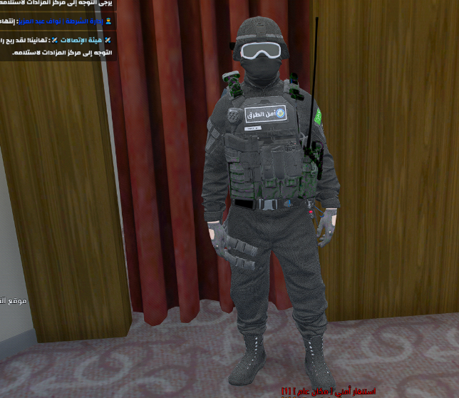

إدارة الأمن العام
قطاع القوات الخاصة لأمن الطرق
دورة القوات الخاصة لأمن الطرق
تنويه من مجلس التدريب
الدورات الاستثنائية يُعلن عنها من قبل رئاسة مجلس التدريب بشكل مستقل وحسب جدول الاحتياج الميداني.
تعريف قطاع أمن الطرق
الإدارة العامة لأمن الطرق هي إحدى الإدارات العامة الخدمية المرتبطة إداريًا وماليًا بمديرية الأمن العام. تتخصص هذه الإدارة في تأمين الطرق السريعة وتتحمل العديد من المهام التي تتطلب وجود عدد من وحدات الدوريات الأمنية يتراوح بين 10 إلى 12 عسكري لتنفيذها وتفعيلها ميدانياً.
مهام أمن الطرق
- 1- أمنية: مباشرة وضبط الجرائم الجنائية والعمل على الحد من وقوعها، وضبط الأسلحة والمخدرات على الطرق الرئيسية والسريعة.
- 2- خدماتية: تقديم المساعدة والدعم للمواطنين والمتعطلين على الطرق الرئيسية والسريعة.
- 3- مرورية: متابعة السرعات العالية والقيادة المتهورة وضبط عموم المخالفين لأنظمة السير على الطرق الرئيسية والسريعة.
- 4- الدعم والمساندة: تقديم الدعم الكامل والمستمر للقطاعات الأمنية الأخرى بالمدينة عند الحاجة أو طلب العون.
🏷️ المسميات الميدانية لأمن الطرق
التسميات والنداءات اللاسلكية الرسمية والصلاحيات الممنوحة لرجال أمن الطرق بالميدان:
ضبط 1 - ضبط 2
هو المسؤول الميداني الأعلى عن أمن الطرق. مسؤوليته المباشرة هي الإشراف العام على الوحدات الميدانية ومتابعة أداء المشرفين والفرق وتسجيل الملاحظات بشكل مستمر.
شروط الاستلام: مخصص حصرياً لـ (مدير ونائب دورة أمن الطرق).
شروط الاستلام: مخصص حصرياً لـ (مدير ونائب دورة أمن الطرق).
عين (1، 2، 3 ...)
هو ضابط ميداني مسؤول عن أمن الطرق، مسؤوليته الإشراف المباشر والميداني على الوحدات العاملة ومتابعة أدائها بانتظام.
شروط الاستلام: مخصص للضباط الحاصلين على الدورة.
شروط الاستلام: مخصص للضباط الحاصلين على الدورة.
أمن (1، 2، 3 ...)
هو فرد ميداني تابع لقطاع أمن الطرق، يباشر عموم الحالات والمهام والضبطيات الميدانية على الطرق.
شروط الاستلام: مخصص لأفراد قطاع أمن الطرق.
شروط الاستلام: مخصص لأفراد قطاع أمن الطرق.
رصد
وحدة ميدانية سرية متخصصة برصد السرعات العالية، وضبط المخالفين وتتبع الحالات دون لفت الانتباه.
نطاق العمل والموقع الميداني
- يقتصر نطاق عمل قطاع أمن الطرق بشكل تام وصارم على الطرق السريعة والشوارع الرئيسية الخارجية.
- يُمنع منعاً باتاً دخول المدن والأحياء الداخلية أو السكنية إلا في الحالتين التاليتين حصراً:
⬅️ وجود مطاردة رسمية قائمة بدأت على الطرق السريعة وامتدت للداخل.
⬅️ ورود طلب دعم مباشر وصريح من قطاع أمني مختص متواجد داخل المدينة. - يُمنع التمركز داخل أو الوقوف الدائم في الشوارع الفرعية أو الميادين الجانبية داخل النطاق الحضري.
- الموجه اللاسلكي المعتمد: التواجد إلزامي على موجة أمن الطرق رقم (4.2).
🚧 تنظيم نقاط التفتيش (أمن الطرق)
- يُمنع إقامة ونصب نقاط التفتيش الميدانية إلا بعد الحصول على أمر صريح ومباشر من أعلى رتبة متواجدة بالموجه.
- تقام نقاط التفتيش حصرياً على الطرق السريعة ومنافذ ومداخل المدن الرئيسية فقط، ويُمنع منعاً باتاً إقامتها داخل الأحياء أو شوارع المدن الداخلية.
وحدة الردع (وحدة ردع)
تعريف وحدة ردع: هي وحدة ميدانية عالية الجاهزية تهدف إلى التعامل الفوري والحازم مع محاولات الهروب، الاختراق، أو التهديدات الأمنية الخطيرة عند نقاط التفتيش.
مهام وحدة ردع:
- التدخل الفوري والسريع لملاحقة وشل حركة المركبات في حالات الهروب من نقاط التفتيش.
- تعزيز ردع وتأمين الهاربين وضبطهم، مع عدم المشاركة بتاتاً في أعمال التفتيش الاعتيادية.
🏷️ مسميات وصلاحيات وحدة ردع:
ردع 1
مخصص للضباط من رتبة ملازم فما فوق. ويُسمح لهم باستعمال السلاح الثقيل في حالات الهروب والتهديد المباشر.
ردع 2
مخصص للأفراد من رتبة رقيب فما فوق. ويُسمح لهم باستعمال السلاح الثقيل في حالات الهروب والتهديد المباشر.
الزي الميداني وكود اللبس لوحدة الردع:

كود لبس وحدة ردع المعتمد بالخادم (تطابق الزي الرسمي بالصورة)
xK7OBL8xMS
محظورات وحدة ردع:
- يُمنع منعاً باتاً إجراء أي تعديل على الزي المخصص والمعتمد لوحدة ردع.
- يُمنع منعاً باتاً مباشرة أو خروج أكثر من وحدتين فقط بمسمى ردع في الميدان.
- يُمنع تفعيل وحدة ردع في حال عدم وجود نقطة تفتيش قائمة ونشطة.
ملاحظة تشغيلية بالغة الأهمية
يجب أخذ الحيطة والحذر الشديدين قبل إسقاط (التعامل الحازم مع) أي شخص، ويجب التحقق الكامل والتيقن التام من تهمته الموجبة لذلك.
📋 قانون سحب رخص القيادة
قواعد سحب رخص القيادة لأمن الطرق
في حال كانت سرعة المركبة المرصودة للمواطن تبلغ 180 كم/س فما فوق، يُسمح لوحدات أمن الطرق بسحب رخصة القيادة فوراً بعد أخذ الإذن من ضابط الحملة.